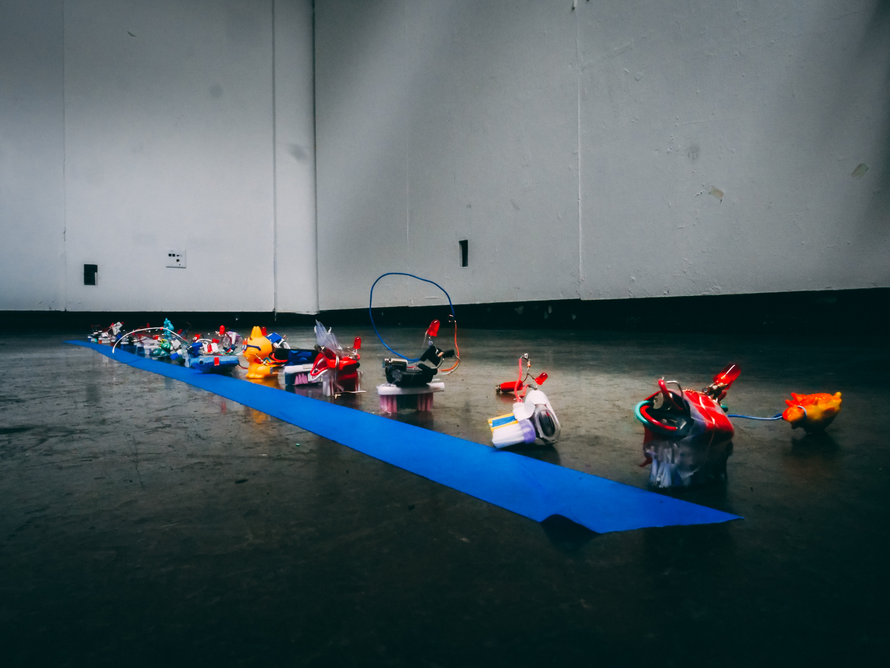
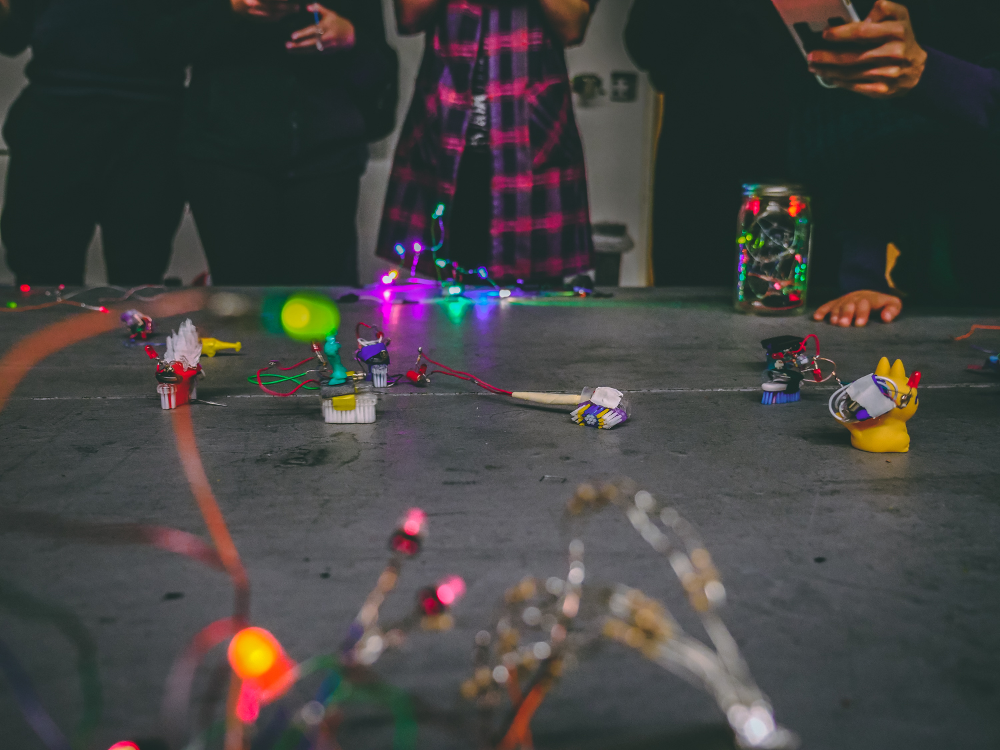

<<<< Back to the Homepage
Project 2 -- Brushbot
"Somebody stop me" -The Mask (Jim Carrey)
For Project 2 we were supposed build and solder a brushbot. This consists of a motor that makes the device vibrate when it spins, a battery, an LED, and a toothbrush head. When the motor vibrates, the toothbrush bristles propel the bot forward (or in any direction). On competition day my bot got FIRST PLACE in the race, but kept falling over in the battle royale part. We were also supposed to solder a strand of border LEDs to make a light up border later. Ours was a simple strand made from 3 smaller strands. 2 of those strands had 3 LEDs on them and 1 strand had only 2.

This was my brush bot design. When making it I had a hard time making it go straight. After adding a side-car brush head, it helped to balance out the weight while vibrating and allow the bot to move as close to forward as possible.

A second shot of my design! The side car was the key to balance and success.

This was our strand of lights for the light border. Messy but still beautiful! We had to make sure each of the 3 wires in parallel had the proper resistance for the number of LEDs on it.







A COOL AND INTERESTING VIDEO: Super Slow Motion Skateboarding Filmed by Adam Shomsky at 1000 fps